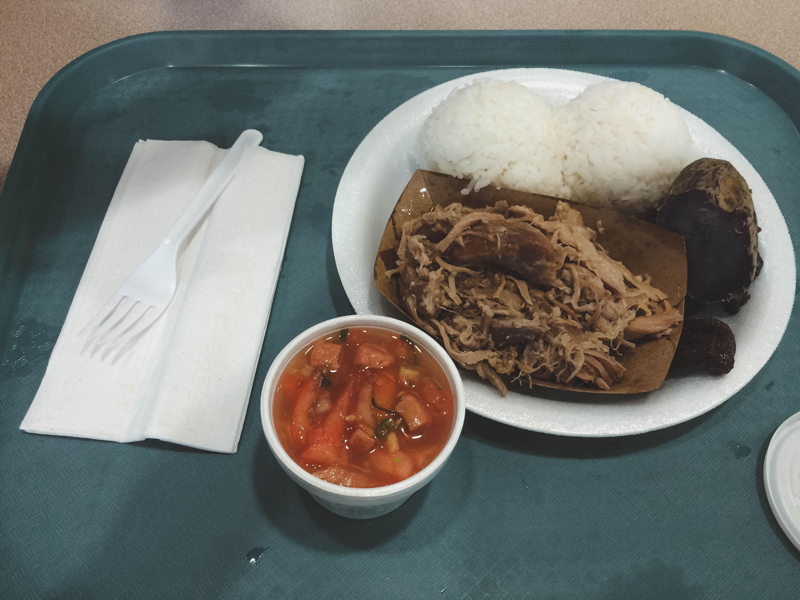
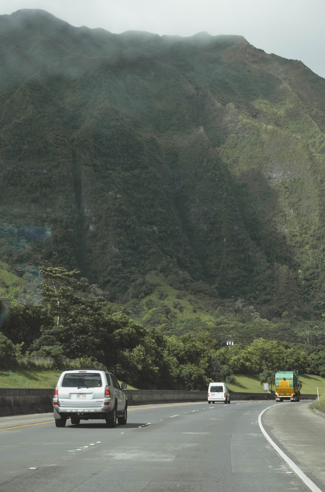

Hawaii 2015
For as long as I can remember, Honolulu, Hawaii has always been a second home to me. My mom's side of the family moved there long before I was born and every so often, we would go and visit. I don't remember much of the visits from when I was young, but in August of 2015, we decided to go again as a family.
As always, I stayed at my grandparent's place with my uncle and his 3 kids. Nicholas, Lucas, and Marissa were all at an age where they now remembered me and genuinely wanted to spend time with me, so that made it all the more fun. We would spend time babysitting them with my grandparents while my Uncle took a much needed break away from them. He ran a food truck on the island and knowing that he was always exhausted running his business, so we would take time every day to go visit and help out at the truck as well.
All of the local areas were the same: Waikiki Beach, Diamond Head, North Island, Dole Plantation, etc., etc. The weather is always beautiful there and the people always warm and friendly. The previous time I visited, We didn't take my cousins around with us because they were so young, but this time, they tagged along to everywhere we went.
I don't have much family in Toronto, so being around the three little ones was a change. It was nice to have someone to spoil, someone to care for, and someone that looked up to you. Every night, we would have dinner with a different relatives from all over the island. It was nice to see my mom so happy being with her family; in turn, it made me feel so at home.
We stayed for around two weeks, and they flew by in the blink of an eye. Each time I left the island, my granma would sit me down the night before our flight to tell me how much she loved me. I never understood much in my younger years, but it dawned on me this time around that she talked to me as if it was the last time she would ever see me again. Life gets busy and I get so caught up in my own responsibilities that I forget my grandparents are aging as well. I told her that I would visit more often, and left it at that.
Honolulu is still that second home to me. Someday, if I'm lucky, I may get to call it home for good. But that is just a distant dream. Until that happens, I will treasure the memories I have on the island.

